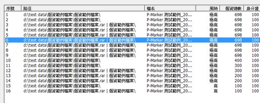
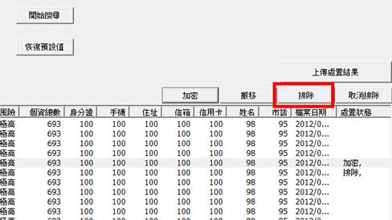
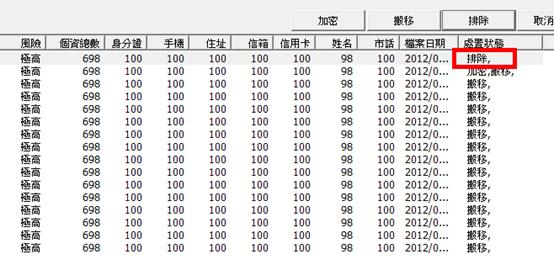
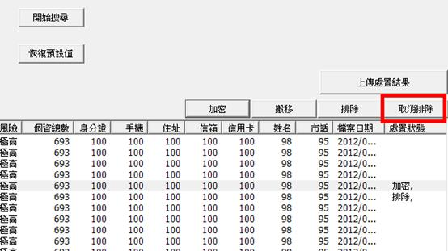

使用者可以將檔案標記為排除，通常應用在該檔案資料屬非現存自然人，或是該檔案為個人或家庭活動所蒐集之資料，例如家庭通訊錄、個人通訊錄等。
目的是協助使用者標記該檔案已經過判斷與處理，認為不需要進行加密或者是搬移的動作，使用者要進行排除的步驟如下：
(1) 選取要排除的檔案。

(2) 點選畫面右上方的「排除」按鈕，即可完成排除動作。

(3) 排除完成後，系統會在處置狀態欄位標註檔案已被「排除」。

(4) 使用者若要取消檔案的「排除」狀態，請按畫面右上方的「取消排除」按鈕。
